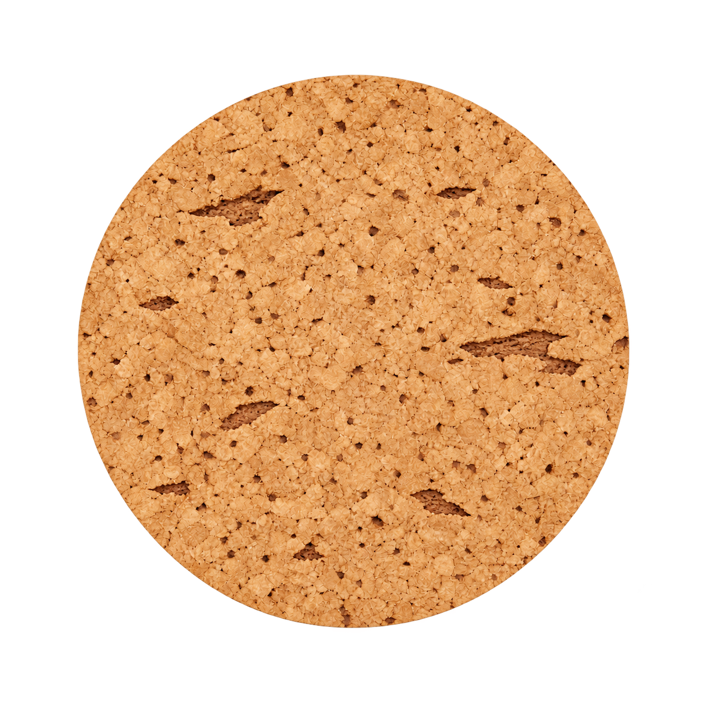
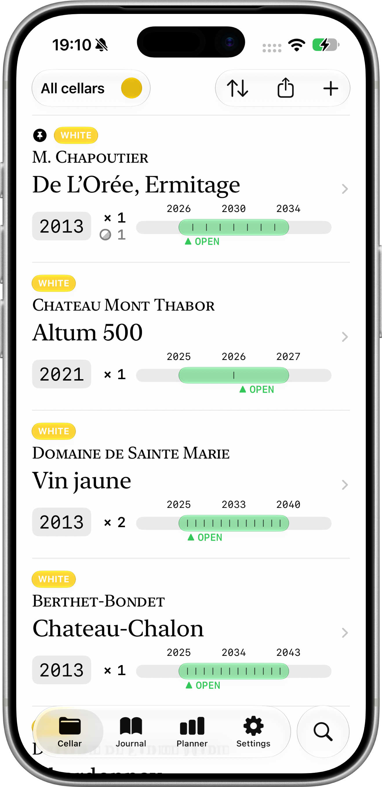
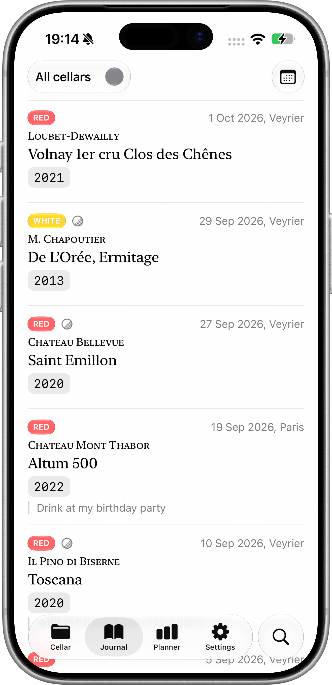
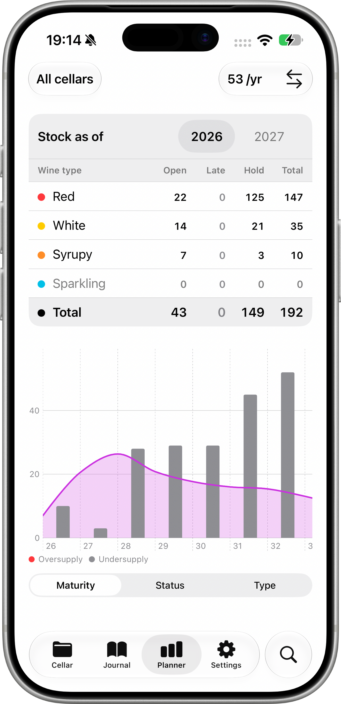

Pernolay
Think of how much money and enjoyment are lost through poor wine cellar management. Pernolay is a no-nonsense analytical tool that helps you get the most out of your collection.




Think of how much money and enjoyment are lost through poor wine cellar management. Pernolay is a no-nonsense analytical tool that helps you get the most out of your collection.


